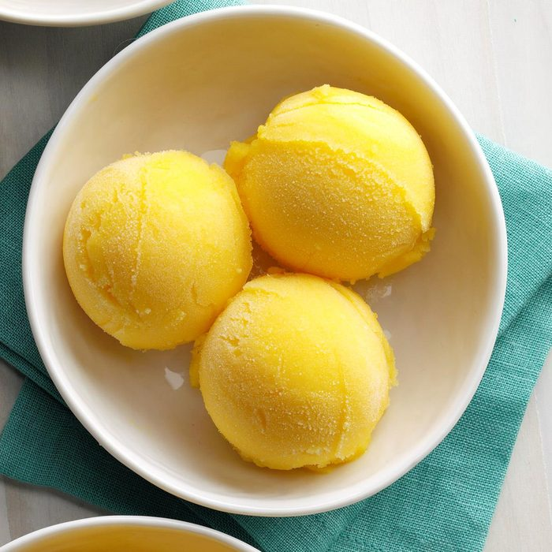

How to Make a Mango Sorbet

How to Make a Mango Sorbet!
A mango sorbet is what you're looking for when you want a cold treat. It's super easy to make and requires very few ingredients and very few steps!
Ingredients
- 1 package (16 ounces) frozen mango chunks, slightly thawed
- 1/2 cup passion fruit juice
- 2 tablespoons sugar
Steps
- Place all ingredients in a blender; cover and process until smooth.
- Serve immediately. If desired, for a firmer texture, cover and freeze at least 3 hours.